<!-- Top Nav -->
<nav class="navbar navbar-default">
  <div class="container">

    <!-- Toggle buttons and brand -->
    <div class="navbar-header">
      <button type="button" class="navbar-toggle" data-toggle="collapse" data-target="#navbar" aria-expanded="true" aria-controls="navbar">
        <span class="glyphicon glyphicon-option-vertical"></span>
      </button>

      <button type="button" class="navbar-toggle for-sidebar" data-toggle="offcanvas">
        <span class="icon-bar"></span>
        <span class="icon-bar"></span>
        <span class="icon-bar"></span>
      </button>

      <a class="navbar-brand" href="../index.html"></a>
    </div>
    <!-- END Toggle buttons and brand -->

    <!-- Top navbar -->
    <div id="navbar" class="navbar-collapse collapse" aria-expanded="true" role="banner">
      <ul class="nav navbar-nav navbar-right">
        <li class="hero"><a href="../getstarted">Get Started</a></li>
        <li><a href="../benchmarking">Speed</a></li>
        <li><a href="../userguide">User Guide</a></li>
        <li><a href="../documentation">Syntax</a></li>
        <li><a href="../gpu_native_backends">GPUs</a></li>
        <li><a href="../scala">Scala</a></li>
        <li><a href="../about">About</a></li>
      </ul>
    </div>
    <div class="github-ribbon">
    <a href="https://github.com/deeplearning4j/nd4j"></a>
    </div>
    <!-- END Top navbar -->
  </div>
</nav>
<!-- End Top Nav -->
